콘크리트산업기사 (2014-08-17 기출문제)
1과목: 콘크리트재료 및 배합
1. 다음 시방배합표에 관하여 옳지 않은 것은? (단, 시멘트, 잔골재 및 굵은 골재의 밀도는 각각 3.15g/cm3, 2.60g/cm3 및 2.60g/cm3 이다.)(오류 신고가 접수된 문제입니다. 반드시 정답과 해설을 확인하시기 바랍니다.)
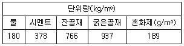
- 물-시멘트비는 47.06%이다.
- 잔골재율은 45.0%이다.
- 공기량은 5.0%이다.
- 콘크리트의 단위용적질량은 2261kg/m3이다.
(정답률: 58%)

2. 시멘트 클링커 주요광물의 특성에 관하여 옳지 않은 것은?(오류 신고가 접수된 문제입니다. 반드시 정답과 해설을 확인하시기 바랍니다.)
- C3A는 수화열이 높다.
- C2S는 장기강도가 높다.
- C2S는 수화열이 낮다.
- C4AF는 화학저항성이 낮다.
(정답률: 14%)
3. 플라이애시에 대한 설명으로 틀린 것은?
- 볼베어링 작용에 의해 콘크리트의 워커빌리티를 개선한다.
- 콘크리트의 발열을 저감시키기 때문에 매스콘크리트에 유리하다.
- 플라이애시는 함유탄소분의 일부가 AE제를 흡착하는 성질을 가지고 있어 소요의 공기량을 얻기 위하여는 AE제의 양이 많이 요구되는 경우가 있다.
- 장기간에 걸친 포졸란 반응에 의해 콘크리트의 수밀성은 향상되지만, 건조수축은 증가하는 경향이 있다.
(정답률: 57%)
4. 골재의 성질이 콘크리트에 미치는 영향에 대한 설명 중 틀린 것은?
- 콘크리트용 부순자갈 및 부순모래 시험결과 실적률이 큰 골재를 사용하면 콘크리트의 단위수량을 감소시킬 수 있다.
- 황산나트륨에 의한 골재 안정성시험결과 손실질량백분율이 작은 골재를 사용하면 콘크리트의 내열성이 향상된다.
- 잔골재의 유기불순물 시험결과 표준용액과 비교하여 색이 짙어진 골재는 콘크리트의 응결 및 경화를 저해할 우려가 있다.
- 골재중에 함유된 점토덩어리를 측정한 시험결과 점토덩어리량이 큰 골재는 콘크리트의 내구성을 저하시킨다.
(정답률: 52%)
5. 시멘트 모르타르 인장강도 시험에서 최대하중 830N에서 공시체가 파괴되었고 이 때 단면적을 측정한 결과 645mm2였다면 이 모르타르의 인장강도는?
- 1.29MPa
- 1.45MPa
- 1.58MPa
- 1.72MPa
(정답률: 67%)
6. 잔골재의 밀도 및 흡수율시험방법에 대한 설명으로 잘못된 것은?
- 표면 건조 포화 상태의 잔골재를 500g 이상 채취하고, 그 질량을 0.1g까지 측정하여, 이것을 1회 시험량으로 한다.
- 시험용 플라스크의 검정된 용량을 나타내는 눈금까지의 용적은 시료를 넣는 데 필요한 용적의 1.5배 이상 3배 미만으로 한다.
- 표면건조 포화상태의 시료를 확인할 때는 시료를 원뿔형몰드에 2층으로 나누어 넣고 다짐봉으로 각 층을 25회씩 다진 뒤 몰드를 수직으로 빼 올린다.
- 시험값은 평균과의 차이가 밀도의 경우 0.0.1g/m3이하이어야 한다.
(정답률: 63%)
7. 다음의 시멘트 시험항목에 대한 관련장치로써 적절하게 연결된 것은?
- 비중시험 - 비카트침
- 압축강도 - 르샤틀리에 플라스크
- 분말도 - 45μm표준체
- 응결시간 - 블레인 공기투과장치
(정답률: 77%)
8. 콘크리트 시방배합 결과가 다음과 같고 5mm체에 남는 잔골재량이 5%, 5mm체를 통과하는 굵은 골재량이 5%일 때 입도를 보정하여 잔골재량을 현장배합으로 수정한 값으로 옳은 것은?
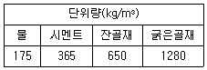
- 615kg/m3
- 620kg/m3
- 625kg/m3
- 630kg/m3
(정답률: 55%)
9. 콘크리트 시방배합 설계에서 단위골재의 절대용적이 698ℓ이고, 잔골재율이 42%, 잔골재의 표건밀도가 2.60g/cm3이라면 단위 잔골재량은?
- 742.2kg
- 752.2kg
- 762.2kg
- 772.2kg
(정답률: 58%)
10. 콘크리트 배합에 관한 일반적인 설명으로 잘못된 것은?
- 콘크리트의 운반시간이 길거나 기온이 높을 때에는 슬럼프가 크게 저하하므로, 배합은 운반중의 슬럼프 저하를 고려한 슬럼프값으로 정해야 한다.
- 고강도콘크리트의 배합은 기상변화가 심하거나 동결융해에 대한 대책이 필요한 경우를 제외하고는 AE제를 사용하지 않는 것을 원칙으로 한다.
- 공사 중에 잔골재의 조립률이 ± 0.2 이상 차이가 있을 경우에는 콘크리트의 워커빌리티가 변하므로 배합을 수정할 필요가 있다.
- 굵은골재 최대치수는 철근의 최소 순간격의 3/4 이하이어야 하며, 콘크리트를 경제적으로 만들기 위해서는 최대치수가 작은 굵은 골재를 사용하는 것이 유리하다.
(정답률: 72%)
11. 골재의 체가름 시험결과를 통해 얻을 수 있는 정보가 아닌 것은?
- 굵은골재의 경우 최대치수를 알 수 있다.
- 조립률을 알 수 있다.
- 입도분포 곡선을 그릴 수 있다.
- 골재의 모양을 개략적으로 알 수 있다.
(정답률: 61%)
12. 시멘트의 분말도에 관한 설명 중 옳은 것은?
- 분말도가 낮은 것일수록 물과 혼합시 접촉 표면적이 커서 수화작용이 빠르다.
- 분말도가 낮은 것일수록 블리딩이 적고 워커블한 콘크리트가 얻어진다.
- 분말도가 높을수록 초기강도는 작으나 장기강도가 크게 된다.
- 분말도가 높을수록 풍화되기 쉽고 건조수축이 커져서 균열이 발생하기 쉽다.
(정답률: 63%)
13. 다음은 시멘트의 특성과 용도에 관하여 설명한 것이다. 틀린 것은?
- 중용열포틀랜드시멘트는 초기강도는 작지만 장기강도가 크고, 댐 등의 매스콘크리트에 사용되고 있다.
- 조강포틀랜드시멘트는 조기에 높은 강도를 얻을 수 있어 한중콘크리트 등에 사용되고 있다.
- 고로슬래그시멘트는 장기재령에서 수밀성이 우수하여 하천공사 및 항만공사 등에 사용되고 있다.
- 내황산염포틀랜드시멘트는 토양이나 공장폐수 등의 황산염에 대한 저항성을 높이기 위하여 C3A의 함유량을 높이고 C2S의 양을 줄여 만든 것이다.
(정답률: 60%)
14. 골재에 대한 설명으로 옳지 않은 것은?
- 골재의 평균입경이 클수록 조립률은 커진다.
- 굵은골재의 최대치수란 질량비로 90% 이상을 통과시키는 체 중에서 최대치수의 체눈의 호칭치수로 나타낸 굵은골재의 치수를 말한다.
- 골재의 입형이 양호하고 입도분포가 적당하면, 실적률은 큰 값을 가진다.
- 골재의 표면건조 포화상태란 골재 입자의 표면에 물은 없으나 내부에는 물이 꽉 차 있는 상태이다.
(정답률: 35%)
15. 다음 표는 잔골재의 밀도 시험 결과 중의 일부이다. 이 잔골재의 표면 건조 포화 상태의 밀도는? (단, 시험온도에서의 물의 밀도는 1g/cm3으로 가정한다.)
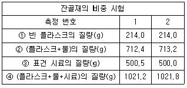
- 2.61g/cm3
- 2.62g/cm3
- 2.63g/cm3
- 2.64g/cm3
(정답률: 31%)
16. 화학혼화제를 사용하여 콘크리트를 제조할 때, 일반적으로 원액의 양이 가장 적게 소요되는 것은?
- 단위수량 저감을 위한 감수제
- 동결융해 저항성 확보를 위한 AE제
- 염화칼슘을 사용한 촉진제
- 경시변화에 의해 저하된 슬럼프를 회복하기 위한 유동화제
(정답률: 31%)
17. 다음 중 양질의 골재로서 갖추어야 할 조건으로 틀린 것은?
- 조립률이 높으며 마모에 강한 것
- 구형이며 단위용적중량이 큰 것
- 조직이 치밀하고 강하며 공극율이 적은 것
- 밀도가 높으며 흡수율이 낮은 것
(정답률: 36%)
18. 콘크리트의 시방배합설계에서 콘크리트의 설계기준강도(fck)가 24MPa이고, 30회 이상의 시험실적으로부터 구한 압축강도의 표준편차가 2.0MPa일 경우 배합강도(fcr)는?
- 26.7MPa
- 27.7MPa
- 28.0MPa
- 28.2MPa
(정답률: 50%)
19. 시멘트의 강도시험(KS L ISO 679)에 사용하는 모르타르의 배합비(시멘트 : 표준사)로서 옳은 것은?
- 1:1
- 1:2
- 1:3
- 1:4
(정답률: 71%)
20. 콘크리트 배합설계에서 단위수량을 선정하는 내용 중 잘못된 것은 무엇인가?
- AE제 및 AE감수제를 사용하면 단위수량이 감소된다.
- 고로슬래그의 굵은골재를 골재로 사용하면 강자갈의 경우보다 단위수량이 감소된다.
- 쇄석을 굵은골재로 사용하면 강자갈의 경우보다 단위수량이 증가한다.
- 소요의 워커빌리티 범위에서 가능한 한 단위수량이 적게 되도록 시험에 의해 정한다.
(정답률: 46%)
2과목: 콘크리트제조, 시험 및 품질관리
21. 어떤 콘크리트시료의 압축강도 시험결과 평균값이 24MPa이고, 표준편차가 4.8MPa이었다면 변동계수는?
- 14%
- 17%
- 20%
- 24%
(정답률: 69%)
22. 레디믹스트 콘크리트의 품질 기준 중 고강도 콘크리트의 공기량 및 허용 오차로서 옳은 것은?
- 공기량 : 5.5%, 허용오차 : 1.5%
- 공기량 : 5.5%, 허용오차 : 2%
- 공기량 : 3.5%, 허용오차 : 2%
- 공기량 : 3.5%, 허용오차 : 1.5%
(정답률: 59%)
23. 레디믹스트 콘크리트의 품질 기준중 염화물 함유량에 대한 규정내용으로 옳은 것은?
- 염소 이온(Cl-)량으로서 0.6kg/m3 이하로 한다. 다만, 구입자의 승인을 얻은 경우에는 1.2kg/m3이하로 할 수 있다.
- 염소 이온(Cl-)량으로서 0.5kg/m3이하로 한다. 다만, 구입자의 승인을 얻은 경우에는 1.0kg/m3이하로 할 수 있다.
- 염소 이온(Cl-)량으로서 0.4kg/m3이하로 한다. 다만, 구입자의 승인을 얻은 경우에는 0.8kg/m3이하로 할 수 있다.
- 염소 이온(Cl-)량으로서 0.3kg/m3이하로 한다. 다만, 구입자의 승인을 얻은 경우에는 0.6kg/m3이하로 할 수 있다.
(정답률: 67%)
24. 콘크리트의 품질관리에 대한 설명으로 틀린 것은?
- 콘크리트의 받아들이기 품질관리는 콘크리트를 타설하기 전에 실시하여야 한다.
- 워커빌리티의 검사는 굵은 골재 최대 치수 및 슬럼프가 설정치를 만족하는지의 여부를 확인함과 동시에 재료분리 저항성을 외관 관찰에 의해 확인하여야 한다.
- 내구성 검사는 공기량, 염소이온량을 측정하는 것으로 한다.
- 강도검사는 콘크리트의 압축강도시험에 의해 실시하는 것을 표준으로 한다.
(정답률: 43%)
25. 굳지 않은 콘크리트의 균열 종류에 해당하지 않는 것은?
- 침하균열
- 휨 균열
- 플라스틱 수축균열
- 거푸집의 변형에 의한 균열
(정답률: 47%)
26. 콘크리트의 탄산화에 대한 설명으로 틀린 것은?
- 페놀프탈레인 용액을 분무하면 콘크리트 자체의 pH를 정확히 알 수 있다.
- 콘크리트의 탄산화를 촉진시키는 인자 중에 대기중의 이산화탄소가 있다.
- 탄산화 시험은 페놀프탈레인 용액을 분무하여 실시하는 것이 가장 일반적이다.
- 탄산화의 진행은 콘크리트 중의 철근 부식현상을 가속화 시키는 원인이 된다.
(정답률: 58%)
27. 지름 150mm, 높이 300mm인 원주형 공시체의 인장강도를 측정하기 위해 쪼갬인장강도시험으로 콘크리트에 하중을 가하여 공시체가 100kN에 파괴되었다면 이 때 콘크리트의 인장강도는?
- 1.2MPa
- 1.3MPa
- 1.4MPa
- 1.6MPa
(정답률: 62%)
28. 믹서의 효율을 시험하기 위하여 콘크리트 중의 모르타르의 단위용적질량의 차 및 단위 굵은 골재량의 차의 시험을 수행 하여야한다. 굵은 골재의 최대치수가 25mm인 경우 각 부분에서 채취 하는 시료의 양은 얼마인가?
- 10L
- 20L
- 25L
- 50L
(정답률: 62%)
29. 콘크리트 압축강도의 영향 인자 중 재료품질에 대한 영향을 설명한 것이다. 옳지 않은 것은?
- 콘크리트의 압축강도는 시멘트의 종류와 강도에 의하여 달라진다.
- 시멘트의 분말도가 높으면 초기강도는 작지만 장기강도가 증가한다.
- 혼합수의 품질이 압축강도에 미치는 영향은 적은 편이나 시공시의 응결시간 및 굳은 후의 콘크리트의 여러 성질 등에 영향을 미친다.
- 골재의 표면이 거칠수록 압축강도는 증가한다.
(정답률: 56%)
30. 콘크리트 받아들이기 품질 검사항목에 속하지 않는 것은?
- 골재의 조립률
- 굳지 않은 콘크리트의 상태
- 펌퍼빌리티
- 염소이온량
(정답률: 58%)
31. 레디믹스트 콘크리트 혼합에 회수수를 사용할 경우, 단위 슬러지 고형분율이 몇 %를 초과하면 안 되는가?
- 3%
- 4%
- 5%
- 6%
(정답률: 54%)
32. 레디믹스트 콘크리트의 지정 슬럼프값이 50mm일 때 슬럼프의 허용오차로 옳은 것은?
- ± 10mm
- ±15mm
- ± 20mm
- ±25mm
(정답률: 63%)
33. 콘크리트의 비비기에 대한 설명으로 옳지 않은 것은?
- 비비기는 미리 정해 둔 비비기 시간의 5배이상 계속해서는 안된다.
- 비비기 시간은 시험에 의해 정하는 것을 원칙으로 한다.
- 비비기를 시작하기 전에 미리 내부를 모르타르로 부착시켜야한다.
- 되비비기는 모르타르, 콘크리트가 엉기기 시작하였을 때 다시 비비는 작업을 말한다.
(정답률: 80%)
34. 콘크리트 압축강도 시험(KS F 24⑤)에서 공시체의 검사에 대한 설명으로 바르지 않은 것은?
- 공시체의 지름은 0.1mm까지 측정한다.
- 공시체의 높이는 0.1mm까지 측정한다.
- 지름은 공시체 높이의 중앙에서 서로 직교하는 2방향에 대하여 측정한다.
- 질량은 공시체 표면의 물을 모두 닦아 낸 후에 측정한다.
(정답률: 45%)
35. 3등분점 휨강도시험에 사용되는 보 시편의 지간길이는 높이의 몇 배가 적당한가?
- 2.5배
- 3배
- 3.5배
- 4배
(정답률: 67%)
36. 콘크리트의 공기량에 관한 설명으로 틀린 것은?
- AE제의 사용량과 공기량은 거의 비례한다.
- 포졸란 사용량이 많으면 공기량은 감소한다.
- AE콘크리트의 공기량은 온도에 반비례한다.
- 반죽질기가 좋아지면 공기량이 적어지고 부배합의 경우에는 공기량이 많아진다.
(정답률: 40%)
37. 공시체의 형상 및 시험방법이 압축강도에 미치는 영향에 대한 설명으로 바르지 않은 것은?
- 원주형공시체의 높이와 지름의 비인 H/ D의 값이 커질수록 강도가 작게 된다.
- 재하속도가 빠를수록 강도가 크게 나타난다.
- 캐핑의 두께는 가능한 얇은 것이 좋으며, 6mm를 넘으면 강도의 저하가 커진다.
- 시험 직전에 공시체를 건조시키면 일시적으로 강도가 감소한다.
(정답률: 57%)
38. 6회의 압축강도시험을 실시하여 아래 표와 같은 결과를 얻었다. 범위 R은 얼마인가?
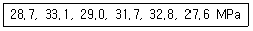
- 5.1MPa
- 5.3MPa
- 5.5MPa
- 5.7MPa
(정답률: 66%)
39. 강제식 믹서로 콘크리트의 비비기를 할 경우, 최소 비비기 시간은 얼마를 표준으로 하는가? (단, 비비기 시간에 대한 시험을 실시하지 않을 경우)
- 30초
- 1분
- 1분 30초
- 2분
(정답률: 73%)
40. 굳지 않은 콘크리트의 공기량 시험방법의 종류가 아닌 것은?
- 질량법
- 압력법
- 용적법
- 증기법
(정답률: 43%)
3과목: 콘크리트의 시공
41. 매스콘크리트의 균열방지 및 제어방법으로서 거리가 먼 것은?
- 프리쿨링(pre-cooling)
- 파이프쿨링(pipe-cooling)
- 프리웨팅(pre-wetting)
- 팽창 콘크리트 사용
(정답률: 29%)
42. 고강도 콘크리트의 정의에 대한 설명으로 옳은 것은?
- 설계기준압축강도가 보통(중량) 콘크리트에서 45MPa이상, 경량골재 콘크리트에서 35MPa 이상인 경우의 콘크리트
- 설계기준압충강도가 보통(중량) 콘크리트에서 45MPa이상, 경량골재 콘크리트에서 27MPa 이상인 경우의 콘크리트
- 설계기준압축강도가 보통(중량) 콘크리트에서 40MPa이상, 경량골재 콘크리트에서 35MPa 이상인 경우의 콘크리트
- 설계기준압축강도가 보통(중량) 콘크리트에서 40MPa이상, 경량골재 콘크리트에서 27MPa 이상인 경우의 콘크리트
(정답률: 50%)
43. 콘크리트 타설시 슈트, 펌프배관, 버킷, 호퍼 등의 배출구와 타설면까지의 낙하높이로 가장 적합한 것은?
- 1.5m 이하
- 2.0m 이하
- 2.5m 이하
- 3.0m 이하
(정답률: 68%)
44. 수중 콘크리트에 대한 설명으로 틀린 것은?
- 일반 수중 콘크리트의 물-결합재비는 50%이하를 표준으로 한다.
- 일반 수중 콘크리트의 단위 시멘트량은 350kg/m3이상을 표준으로한다.
- 트레미로 시공하는 일반 수중 콘크리트의 슬럼프는 130~180mm를 표준으로 한다.
- 수중불분리성 콘크리트는 혼화제의 점증효과에 의해 필요한 유동성을 확보하기 위해 단위수량이 일반 수중 콘크리트보다도 커진다.
(정답률: 37%)
45. 수중 콘크리트의 비비기에 대한 설명으로 틀린 것은?
- 수중불분리성 콘크리트의 비비기는 제조설비가 갖추어 진 배치플랜트에서 물을 투입하기 전 건식으로 20~30초를 비빈 후 전 재료를 투입하여 비비기를 하여야 한다.
- 믹서는 강제식 배치믹서를 사용하여야 한다.
- 비비는 시간은 시험에 의해 콘크리트 소요의 품질을 확인하여 정하여야 하며, 강제식 믹서의 경우 비비기 시간은 1분을 표준으로 한다.
- 수중불분리성 콘크리트는 소요 품질의 콘크리트를 얻기 위하여 1회 비비기 양은 믹서의 공칭용량의 80% 이하로 하여야 한다.
(정답률: 13%)
46. 해양콘크리트에 대한 설명으로 틀린 것은?
- 해안선으로부터 250m이내의 육상지역은 콘크리트 구조물이 염해를 입기 쉬우므로 해안으로부터 거리에 따라 구분하여 내구성 향상 대책을 수립하여야 한다.
- 해양콘크리트 구조물에 쓰이는 콘크리트의 설계기준강도는 24MPa 이상으로 하여야 한다.
- 단위 결합재량을 크게 하면 해수 중의 각종 염류의 화학적 침식, 콘크리트 속의 강재의 부식 등에 대한 저항성이 커진다.
- 해수에 의한 침식이 심한 경우에는 폴리머 시멘트 콘크리트와 폴리머 콘크리트 또는 폴리머 함침 콘크리트 등을 사용할 수 있다.
(정답률: 66%)
47. 고강도 콘크리트의 제조방법에 대한 설명으로 틀린 것은?
- 물-결합재비를 감소시킨다.
- 고성능 감수제를 사용한다.
- 양질의 골재를 사용한다.
- 굵은 골재 최대치수를 증가시킨다.
(정답률: 53%)
48. 콘크리트 공장제품에 관한 설명 중 틀린 것은?
- 슬럼프가 10mm 이상인 콘크리트에 대해서는 슬럼프 시험을 원칙으로 한다.
- 프리스트레스트 콘크리트 공장 제품의 경우 순환골재를 사용할 수 없다.
- 프리스트레스 긴장재는 스터럽이나 온도철근 등 다른 철근과 용접할 수 없다.
- 공장제품의 품질관리 및 검사는 실물을 직접 시험하는 것을 원칙으로 한다.
(정답률: 40%)
49. 콘크리트 습윤양생 기간의 표준에 대한 설명으로 옳은 것은?
- 보통 포틀랜드 시멘트를 사용한 콘크리트로서 일평균 기온이 15°C 이상인 경우 3일을 표준으로 한다.
- 보통 포틀랜드 시멘트를 사용한 콘크리트로서 일평균 기온이 5°C 이상 10°C 미만인 경우 7일 표준으로 한다.
- 조강 포틀랜드 시멘트를 사용한 콘크리트로서 일평균 기온이 5°C 이상 10°C 미만인 경우 5일을 표준으로 한다.
- 고로 슬래그 시멘트를 사용한 콘크리트로서 일평균 기온이 15°C 이상인 경우 5일을 표준으로 한다.
(정답률: 34%)
50. 포장용 콘크리트의 배합기준으로 틀린 것은?
- 설계기준 휨강도(f28) : 4.5 MPa 이상
- 단위수량 : 150kg/m3이하
- 슬럼프 : 60mm 이하
- 굵은 골재의 최대 치수 : 40mm 이하
(정답률: 60%)
51. 일반적인 공장제품에 사용되는 콘크리트의 강도는 재령 몇 일의 압축강도 시험값을 기준으로 하는가?
- 5일
- 10일
- 14일
- 28일
(정답률: 76%)
52. 건식방식의 숏크리트 배합을 정할 때 선정해야 하는 항목이 아닌 것은?
- 굵은 골재의 최대치수
- 혼화 재료의 종류 및 단위량
- 단위 시멘트량
- 슬럼프
(정답률: 37%)
53. 내부 진동기를 이용하여 콘크리트의 진동다지기를 할 때 일반적인 삽입 간격은?
- 0.5m 이하
- 1.0m 이하
- 1.5m 이하
- 2.0m 이하
(정답률: 62%)
54. 콘크리트의 이음에 대한 설명으로 옳지 않은 것은?
- 해양 및 항만 콘크리트 구조물은 시공이음부를 되도록 두지 않는 것이 좋다.
- 시공이음은 부재의 압축력이 작용하는 방향과 직각이 되도록 설치하는 것이 원칙이다.
- 바닥틀의 시공이음은 슬래브 또는 보의 경간 중앙부 부근에 두어야 한다.
- 신축이음은 양쪽의 구조물 혹은 부재가 구속되어 있는 구조물로 하여야 한다.
(정답률: 66%)
55. 습식 숏크리트의 경우 배치 후 몇 분 이내에 뿜어붙이기를 실시하여야 하는가?
- 60분 이내
- 90분 이내
- 120분 이내
- 150분 이내
(정답률: 50%)
56. 숏크리트에 대한 설명으로 틀린 것은?
- 임의 방향으로 시공가능하고 재료의 손실이 많다.
- 수밀성이 적고 작업 시 분진이 생길 수 있다.
- 거푸집이 불필요하며 급속시공이 가능하다.
- 콘크리트 접착 면에서 용수 발생시 부착이 용이하다.
(정답률: 57%)
57. 수화열이나 건조수축으로 인한 콘크리트 구조물의 변형이 구속됨으로써 발생할 수 있는 균열에 대한 대책중의 하나로, 소정의 간격으로 단면 결손부를 설치한 것을 지칭하는 것은?
- 콜드조인트
- 시공이음
- 균열유발이음
- 전단키
(정답률: 65%)
58. 한중 콘크리트의 강도를 예측하는 데 이용되는 적산 온도의 개념을 나타낸 식으로 옳은 것은? (여기서, θ : Δt시간 중의 콘크리트의 평균 양생온도(°C), A : 정수로서 일반적으로 10°C가 사용, Δt : 시간(일))
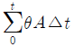
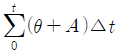
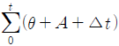
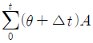
(정답률: 67%)
59. 철근이 배치된 일반적인 매스콘크리트 구조물에서 균열발생을 제한할 경우 표준적인 온도균열지수값으로 옳은 것은?
- 1.5 이상
- 1.2~1.5
- 0.7~1.2
- 0.7 이하
(정답률: 60%)
60. 하루 평균기온이 몇 °C를 초과하는 것이 예상될 때 서중콘크리트로서 시공하여야 하는가?
- 23°C
- 25°C
- 28°C
- 30°C
(정답률: 78%)
4과목: 콘크리트 구조 및 유지관리
61. 다음 콘크리트 압축강도 평가법 중 가장 신뢰성이 높은 방법은?
- 코어 압축강도시험
- 초음파속도법
- 인발시험
- 반발경도방법
(정답률: 67%)
62. 강도 설게법을 적용하기 위한 가정조건으로 틀린 것은?
- 극한강도 상태에서 철근 및 콘크리트의 응력은 중립축으로부터의 거리에 비례한다.
- 압축측 연단에서 콘크리트의 극한 변형율은 0.003으로 가정한다.
- 콘크리트의 응력분포는 가로 0.85fck, 깊이 α=β1c인 등가 4각형 분포로 나타낼 수 있다.
- 휨응력 계산에서 콘크리트의 인장강도는 무시한다.
(정답률: 44%)
63. 알칼리 골재반응 중 알칼리-실리카반응에 의한 구조물의 손상에 대한 설명으로 틀린 것은?
- 이상팽창을 일으킨다.
- 팝아웃 현상을 일으켜 골재주의의 바깥 부분 모르타르가 탈락되어 표면이 패인다.
- 표면에 불규칙한(거북이등 모양 등) 균열이 생긴다.
- 골재입자의 둘레에 검은색 반응환이 보인다.
(정답률: 32%)
64. 다음 중 콘크리트의 균열발생 원인과 직접적인 관계가 먼 것은?
- 수화열
- 건조수축
- 철근부식
- 플라이 애시
(정답률: 67%)
65. 콘크리트 구조물의 보수에 관한 내용으로 틀린 것은?
- 콘크리트가 중성화되어 강재부식이 나타나 재가설 할 수 없는 경우는 재알칼리화 공법을 사용한다.
- 동해에 의한 열화는 진행정도에 따라 보수공법이 다르지만 기본적으로는 콘크리트 내부에서 수분이동과 확산을 방지할 수 있어야 한다.
- 손상에 의해 박락된 콘크리트나 보수를 위해 쪼아낸 콘크리트는 기존 콘크리트보다 높은 탄성계수의 단면복구재를 사용하여 복구한다.
- 균열보수공법은 방수성과 내구성을 향상하는 것을 목적으로 하는 공법이며, 표면처리공법, 주입공법, 추진공법 등이 있다.
(정답률: 50%)
66. 다음 중 알칼리 골재반응의 진행속도에 영향을 주는 인자가 아닌 것은?
- 콘크리트내의 염화물 이온의 양
- 시멘트 알칼리량
- 수분의 공급상태
- 골재중 반응성 광물의 함유량
(정답률: 46%)
67. 그림과 같은 직사각형 단면 보에서 콘크리트가 부담할 수 있는 전단강도(Vc)는? (단, fck=21MPa, fy=400MPa 이다.)
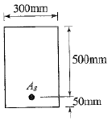
- 36.2kN
- 114.5kN
- 262.4kN
- 364.3kN
(정답률: 65%)
68. 콘크리트 바닥판의 보강 공법 중 연속섬유 시트접착공법에 대한 설명으로 틀린 것은?
- 내식성이 우수하고, 염해지역의 콘크리트구조물 보강에도 적용할 수있다.
- 주로 바닥판 콘크리트 압축측에 접착하여 콘크리트 압축강도 향상의 효과를 목적으로 한다.
- 보강효과로서 균열의 구속효과, 내하성능의 향상효과도 기대된다.
- 섬유시트는 현장성형이 용이하기 때문에 작업공간이 한정된 장소에서 작업이 편리하다.
(정답률: 40%)
69. 보의 보폭이 320mm, 보의 높이가 450mm, 보의 유효깊이가 400mm, 인장철근량이 2,026.8mm3, 압축철근량이 1,013.4mm3인 복철근직사각형단면의 보에서 하중에 의한 탄성처짐량이 0.8mm이다. 재하기간 1년후 총 처짐량은 얼마인가? (단, 시간경과계수 β=1.4를 적용한다)
- 0.8mm
- 1.4mm
- 1.6mm
- 1.9mm
(정답률: 30%)
70. 단철근 직사각형보를 강도설계법으로 설계를 할 때 fy=400MPa, d=500mm라면 균형단면의 중립축거리(cb)는?
- 200mm
- 250mm
- 300mm
- 350mm
(정답률: 63%)
71. 다음 중 슬래브와 보를 일체로 친반T형보의 유효폭의 결정에 이용되지 않는 것은?
- (양쪽으로 각각 내민 플랜지 두께의 8배씩) + 복부폭
- (인접 보와의 내측거리의 1/2)+ 복부폭
- (보의 경간의 1/12)+복부폭
- (한쪽으로 내민 플랜지 두께의 6배)+ 복부폭
(정답률: 16%)
72. bw=300mm, d=500, A8=1,285mm2인 단철근 직사각형보의 공칭휨강도(Mn)는? (단, fck=30MPa, fy=400MPa이다.)
- 240kNㆍm
- 410kNㆍm
- 578kNㆍm
- 628kNㆍm
(정답률: 52%)
73. 콘크리트의 동결융해에 대한 설명으로 틀린 것은?
- 콘크리트 중의 수분이 동결하면 팽창하여 미세한 균열이 발생한다.
- 동결융해에 대한 내구성 지수(DF)가 클수록 내구성이 좋다.
- 콘크리트속의 기포와 기포의 간격이 가까울수록 동결융해 저항성이 크다.
- 일반적으로 콘크리트의 동결융해 저항성을 개선하기 위하여 콘크리트 내부에 도입하는 공기량은 2% 정도 이하이어야 한다.
(정답률: 63%)
74. 그림과 같은 프리스트레스트 콘크리트 단순보에 PS강선을 포물선으로 배치했을 때 중앙점에서 PS 강선의 편심은 100mm이고, 양지점에서는 0이었다. PS 강선을 4,000kN으로 인장할 때 생기는 등분포 상향력 U는?
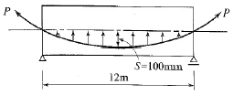
- 11.6kN/m
- 15.0kN/m
- 18.5kN/m
- 22.2kN/m
(정답률: 46%)
75. 철근의 이음에 대한 설명 중 틀린 것은?
- D35를 초과하는 철근은 겹침이음을 하지 않는다.
- 다발철근의 겹침이음은 다발 내의 개개 철근에 대한 겹침이음길이를 기본으로 하여 결정하여야 한다.
- 인장력을 받는 이형철근 및 이형철선의 겹침이음길이는 300mm 이상이어야 한다.
- 용접이음은 콘크리트의 설계기준압축강도 fck의 125퍼센트 이상을 발휘할 수 있는 완전용접이어야 한다.
(정답률: 28%)
76. 다음 중 콘크리트의 균열 폭을 줄일 수 있는 방법으로 가장 적합한 것은?
- 굵은 철근을 사용하기 보다는 가는 철근을 많이 사용한다.
- 철근에 발생하는 응력이 커질 수 있도록 배근한다.
- 철근이 배근되는 곳에서 피복두께를 크게 한다.
- 콘크리트의 압축부분에 압축철근을 배치한다.
(정답률: 55%)
77. 콘크리트 타설 후 가장 빨리 발생되는 균열의 종류는?
- 건조수축균열
- 온도균열
- 알칼리골재반응에 의한 균열
- 소성수축균열
(정답률: 59%)
78. 구조물의 부재, 부재간의 연결부 및 각 부재 단면의 휨모멘트, 축력, 전단력, 비틀림모멘트에 대한 설계강도는 공칭강도에 강도감소 계수를 곱한 값으로 하여야한다. 강도감소게수의 규정 중 잘못된 것은?
- 인장지배 단면 : 0.85
- 전단력과 비틀림 모멘트 : 0.80
- 포스트텐션 정착구역 : 0.85
- 무근콘크리트의 휨모멘트 압축력, 전단력, 지압력 : 0.55
(정답률: 46%)
79. 아래의 표에서 설명하는 균열보수공법은?
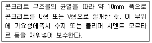
- 표면처리공법
- 단면복구공법
- 충전공법
- 강판접착공법
(정답률: 60%)
80. 설계기준 항복강도가 400MPa인 이형철근을 사용한 1방향 철근콘크리트 슬래브에서 수축 및 온도철근에 대한 최소 철근비는?
- 0.0012
- 0.0020
- 0.0035
- 0.0040
(정답률: 50%)